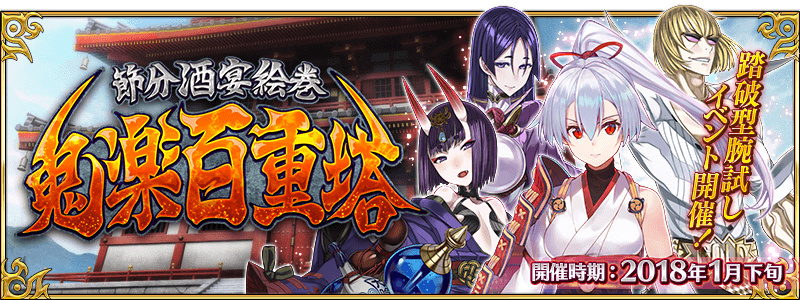

◆期間限定活動「節分酒宴繪巻 鬼樂百重塔」舉辦決定！◆
『Fate/Grand Order』初的節分活動「節分酒宴繪巻 鬼樂百重塔」舉辦決定。
本活動為以通過「終局特異點」的Master對象，踏破百重塔推進活動的“適合上級者的試驗活動。
追加出撃過一次Servant變成一段時間無法再出撃系統、無法選擇支援、靠Master自身召喚的6位Servant出撃的新系統等。強化更多Servant備戰活動吧！
※本活動並無活動報酬Servant和新Servant的追加。
※Servant變成一段時間無法再出撃時，與限制對象Servant相同的Servant也無法出撃。(1/14 18:30追記)
※可利用補助功能縮短想多出撃Servant的無法再出撃時間。(1/14 18:30追記)
◆舉辦時間◆
2018年1月下旬預定
◆參加條件◆
只限通過「終局特異點」的Master才能參加
※不需要通過「亞種特異點Ⅰ 惡性隔絕魔境 新宿 新宿幻靈事件」、「亞種特異點Ⅱ 傳承地底世界 雅戈泰 雅戈泰之女」、「亞種特異點Ⅲ 屍山血河舞台 下總國 英靈剣豪七番勝負」、「亞種特異點Ⅳ 禁忌降臨庭園 塞勒姆 異端的塞勒姆」、第2部序章「序／2017年 12月26日」、第2部序章「序／2017年 12月31日」。
詳情日後會再公告。